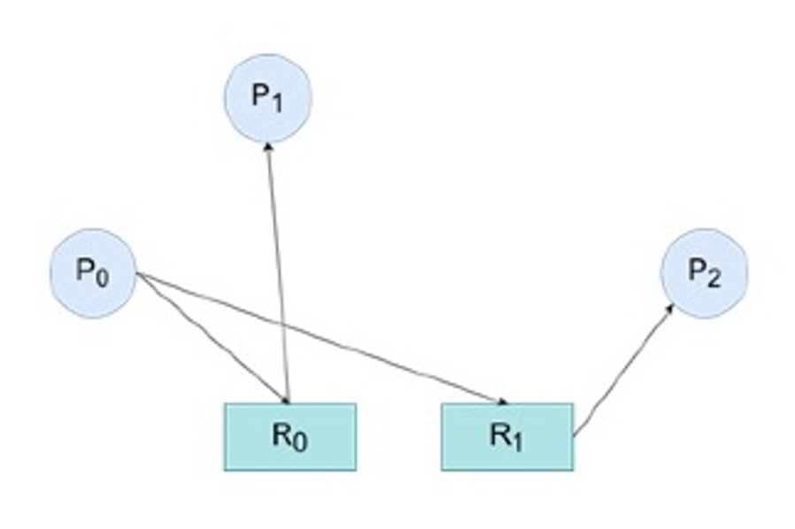
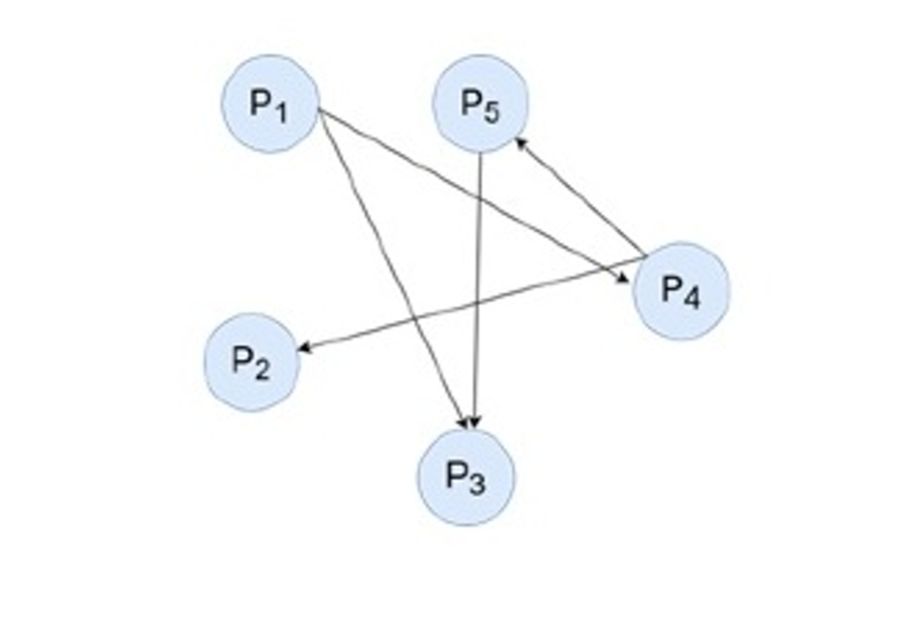

In distributed algorithms, a leader election is a process of designating a single process as the organizer, coordinator, initiator or sequence of some task distributed among several computers (nodes).
Leader election is a process of determining that a process will be manager of some task distributed among several processes or nodes.
Following are the reason to elect a leader:
A centralize control simplifies process synchronization, but it is single point failure, and can limit the service.
To provide solution to choose a new controller (leader) upon failure of existing controller.
There are many algorithms for leader election, and one of those can be chosen based on specific requirements
When to elect a leader?
During the system initiation or when the existing leader fails.
A process that gets no response from the current leader for a predetermined time. This time out suspects a leader failure and hence should initiate a leader election.
When election concludes, a coordinator has been chosen and is known to all processes.
Assumptions for Leader Elections Algorithm?
Each Processes have a unique, positive identifier.
All processes know all other process identifiers.
The process with the highest valued identifier is duly elected coordinator.
Logical Ring Algorithm
To elect leader among group of interconnected nodes arranged in a ring like structure.
Scenario: Consider a distributed system where processes are organized in a logical ring. When a leader election is needed, process A initiates the election by sending a message containing its ID to its neighbor, process B.
Example:
There are 5 processes in a distributed system, organized in a logical ring: P1, P2, P3, P4, and P5.
Each process has a unique ID.
The goal is to elect the process with the highest ID as the leader.
Process: Each process adds its ID to the message and forwards it until the message returns to process A. The process with the highest ID in the message declares itself the leader.
Steps:
Initiation: Suppose process P3 detects that the current leader has failed and initiates an election. It sends a message containing its ID (3) to its neighbor, P4.
Message Passing: Each process adds its ID to the message and passes it to the next process in the ring.
Election: When the message completes the circle and returns to P3, it contains the IDs of all the processes (3, 4, 5, 1, 2).
Leader Selection: P3 sees that P5 has the highest ID, so P5 is declared the leader and leader declared with ID message is passed to the other nodes.
Outcome: The election ensures that even if multiple processes start the election simultaneously, they all converge on the same leader.
Ring Algorithm Advantages and Disadvantages
Advantages:
Simple Implementation: Easy to set up as each process only communicates with its neighbor.
Low Message Overhead: Requires fewer messages (O(N)), making it efficient in terms of communication.
Scalable: Handles large systems well with linear message complexity.
Disadvantages:
Slow Leader Election: Can be slow as the token must pass through all nodes.
Failure Sensitivity: A single node failure can disrupt the election.
Higher Latency: Takes longer to elect a leader, especially in large rings.
Bully Algorithm starts its process of selecting of coordinator when a working process notices that the coordinator is not responding to it and then initiates an election. To select a coordinator the process who notices sends an election message to all the other available processes.
If none of the process responds to its message the process itself wins the election and becomes the coordinator.
Meanwhile, if any process that has a higher ID than the initiating process answers, it takes charge of initiating the process.
In this algorithm, the bully guy that is the participating process that has the highest ID becomes the coordinator. This approach is efficient in terms of fault tolerance but complex to implement.
Steps of the Bully Algorithm
Detection of Leader Failure:
A process (let's call it P) detects that the current leader has failed (e.g., it stops receiving heartbeat messages or notices no response from the leader).
Election Initiation:
P starts the election by sending an "Election" message to all processes with higher IDs.
If P doesn’t receive any responses from higher ID processes, it declares itself the leader.
Response from Higher ID Processes:
If any of the higher ID processes receive the "Election" message from P, they respond with an "OK" message to P. This means that these higher ID processes are taking over the election process.
Upon receiving the "OK" message, P knows it cannot be the leader and stops participating in the election.
Higher ID Process Takes Over:
The higher ID process that sent the "OK" message to P now sends an "Election" message to all processes with IDs higher than its own.
This process continues until no higher ID process responds, meaning the highest ID process in the system will eventually become the leader.
Leader Announcement:
The process that receives no "OK" responses after initiating an election declares itself the leader by sending a "Coordinator" message to all other processes.
All processes now recognize this process as the new leader.
Handling Concurrent Elections:
If multiple processes detect the leader's failure simultaneously and start the election process, they will eventually all receive an "OK" message from the process with the highest ID.
This ensures that the highest ID process wins and declares itself the leader, while others withdraw from the election.
Bully Algorithm Advantages and Disadvantages:
Advantages:
Quick Leader Election: Fast in smaller systems as it quickly identifies the highest ID process.
Fault Resilience: Handles failures well by quickly promoting the next highest ID process.
Disadvantages:
High Message Overhead: Generates a lot of messages (O(N^2)), especially in large systems.
Complex Implementation: Managing concurrent elections and handling responses adds complexity.
Less Scalable: Not efficient for large systems due to message overhead.
Ring vs Bully Algorithm and Use cases
Use Cases :
IOT : In IoT networks, leader election can be used to select a master device or gateway that coordinates communication between devices and manages data aggregation.
Distributed Job scheduling : in systems where jobs or tasks need to be scheduled across multiple nodes, leader election ensures that one node takes responsibility for job distribution and management.
Networking in Routing protocols : to select a router or switch that will manage the routing table or coordinate communication between different network segments.
Distributed databases ( Cassandra, MongoDB ) : to elect primary master to handle write operations, data replication and manages consistency.
Ring vs Bully
Criteria
Bully Algorithm
Ring Algorithm
Concept
Highest ID process becomes leader.
Leader elected by passing token in a ring.
Message Complexity
O(N^2)
O(N)
Message Overhead
High
Low
Fault Tolerance
Quick recovery, but high message load.
Slower recovery, but lower message load.
Scalability
Less scalable in large systems.
More scalable due to linear complexity.
Implementation
More complex due to concurrent elections.
Simpler, sequential communication.
Best For
Systems needing quick, priority-based leader election.
Systems where processes are equal and low overhead is important.
The Tree Leader Election Algorithm is used to elect a leader in a distributed system where processes are arranged in a tree structure. It is assumed that Each node (process) knows its parent and children.
The Election with the Tree algorithm is a distributed algorithm used to elect a leader or coordinator in a network of processes organized as a tree. The goal of the election is to select a unique process as the leader that can perform some central tasks for the network.
In a distributed system, an election process can be initiated by processes sending a "wakeup" message to all other processes in the network. This message acts as a signal for all processes to start participating in the election process.
The election algorithm works as follows:
Each process in the tree sends an election message to its parent process.
The parent process selects the process with the highest identifier as the winner and sends a message to the winner to announce its election.
The winner process then sends an election message to its children processes to start a new round of election.
The process with the highest identifier among its children is selected as the winner and the process repeats the process of sending an election message to its children.
This process continues until all the processes in the tree have been visited and the process with the highest identifier has been elected as the leader.
The election algorithm ensures that the process with the highest identifier is selected as the leader and ensures that the election is performed in a deterministic manner. The algorithm is usually used in situations where a single leader is required to coordinate the activities of the network, such as in fault-tolerant systems.
WITH FLOODING CONTEXT - CHATGPT
The Election with Tree Algorithm is a method used in distributed systems to select a leader or coordinator among nodes that are organized in a tree structure. Here’s a detailed explanation of how it works:
Assumptions
Tree Topology: The network is structured as a tree, where nodes are arranged hierarchically with a parent-child relationship.
Initiators: All leaf nodes (nodes without children) are considered initiators, capable of starting the election process.
Flooding Phase: The election process begins with a wake-up phase called "flooding," where nodes become aware that an election is needed.
Phases of the Election with Tree Algorithm
1. Flooding Phase (Wake-Up Phase)
Initiators: Leaf nodes (initiators) start by sending a <wakeup> message to all their neighbors (parent and possibly sibling nodes).
Non-Initiators: When a non-initiator node (any node that receives <wakeup> but is not a leaf) receives the first <wakeup> message, it forwards the message to all of its neighbors.
Waiting: Each node continues to wait until it has received a <wakeup> message from all its neighbors. This ensures that the entire tree is aware that an election needs to take place and that every node is "awake."
2. Tree Algorithm Phase (Leader Election)
After all nodes have received the <wakeup> messages from their neighbors, they proceed with the tree algorithm phase to elect the leader.
Token Exchange:
A node p waits until it has received messages of the form <tok, vi> from all but one of its neighbors.
It then computes q = min(p, vi) where vi are the values received from its neighbors and p is its own value (usually a unique identifier).
Node p sends <tok, q> to the remaining neighbor (the one from which it has not yet received a token).
Final Computation:
Node p waits for a response from this last neighbor in the form <tok, r>.
It then computes s = min(q, r) where r is the value received from the last neighbor.
It sends back <tok, s> to the other neighbors to propagate this minimum value throughout the tree.
Election Check:
If a node finds that p = s (i.e., its own value is the minimum value it has computed), it declares itself as the elected leader.
Example of the Election Process
Imagine a tree with nodes having unique identifiers. Let’s say the tree has nodes with IDs {1, 2, 3, 4, 5} where 1 is the root, and 2, 3, 4, and 5 are leaf nodes (initiators).
The leaf nodes (2, 3, 4, and 5) send <wakeup> messages to the root node (1).
Node 1, upon receiving <wakeup> messages from all its children, initiates the token exchange to find the minimum identifier among all nodes.
If the minimum ID is found to be 2, node 2 is declared the leader.
The result is propagated back through the tree so that all nodes know who the leader is.
Key Points
Efficient Election: The algorithm efficiently finds the leader using the hierarchical tree structure, reducing the number of messages needed compared to a fully connected network.
Fault Tolerance: If the elected leader fails, the process can be restarted to elect a new leader.
Minimization Criterion: The leader is selected based on a minimization criterion, usually the node with the smallest identifier.
Use Cases
Distributed Systems: Useful in distributed databases, sensor networks, and any system where a hierarchical structure naturally exists.
Network Protocols: Suitable for networks where a tree topology is used, such as multicast routing trees.
The Election with Tree Algorithm is a systematic and efficient way to elect a leader in distributed systems that follow a tree topology, ensuring coordination and reliability.
Time in distributed systems, problem definition (physical vs logical time), Lamport’s clock. Christians and Berkeley algorithm.
Time in DS and Problem Definition
Problem Definition in Distributed Systems
When dealing with time in distributed systems, several problems arise, mainly due to the lack of a global clock and the distributed nature of the environment:
Clock Synchronization Problem: How can we ensure that all nodes in a distributed system have the same time? This is challenging due to network delays, varying clock speeds, and the lack of a central authority.
Event Ordering Problem: How can we determine the order of events in a distributed system? Since there is no global clock, the system needs to determine the causal relationships between events to order them correctly.
Consistency Problem: How can we maintain consistency in a distributed system, especially in the presence of clock drift and network partitioning? Different consistency models, like eventual consistency or strong consistency, handle this issue in various ways.
Fault Tolerance Problem: How can a distributed system continue to function correctly in the presence of faults, such as clock failures or network partitions, that affect the perception of time?
Time-based Coordination and Synchronisation : In distributed algorithms like leader election, mutual exclusion, or consensus, time often plays a critical role. The system must coordinate actions based on timing information, which is challenging without synchronized clocks.
Lamport clock
Lamport clocks represent time logically in a distributed system. They are also known as logical clocks. The idea behind Lamport clocks is to disregard physical time and capture just a “happens-before” relationship between a pair of events.
Key Concepts:
Event Ordering: In a distributed system, each process performs its operations and communicates with other processes. A Lamport clock provides a way to assign a “timestamp” to each event such that the order of events can be determined across the entire system.
Logical Clock: Each process in the system maintains a local counter, which is the Lamport clock. The clock is initialized to 0 at the start.
Clock Update Rules: Internal Events: When a process executes an internal event (an event that only affects the local state and not any other process), it increments its local Lamport clock by 1.
Sending a Message: When a process sends a message, it increments its Lamport clock by 1 and attaches this timestamp to the message.
Receiving a Message: When a process receives a message, it compares its local clock with the timestamp of the received message. The process then updates its clock to be the maximum of its current clock value and the received timestamp, and then increments it by Example:
Suppose we have two processes, P1 and P2:
1. P1 performs an internal event, so it increments its clock: P1_clock = 1. 2. P1 sends a message to P2. Before sending, P1 increments its clock:P1_clock= 2 The message carries this timestamp. 3. P2 receives the message. Suppose P2’s current clock is P2_clock = 1. Upon receiving the message with timestamp 2, P2 updates its clock to max(P2_clock, received_timestamp) + 1, which is max(1, 2) + 1 = 3.
Now, even though P1 and P2 may not have synchronized physical clocks, their logical clocks allow them to agree on the order of events.
1. Simplicity: Easy to implement with minimal computational overhead. 2. Causal Ordering: Ensures that causally related events are correctly ordered. 3. Low Overhead: Requires only a single integer as a timestamp in messages.
Disadvantages of Lamport Clock:
1. Partial Ordering: Cannot distinguish between concurrent events. 2. No Total Order: Additional mechanisms are needed for a total order of events. 3. Ambiguity: Concurrent events may end up with the same timestamp, causing confusion. 4. No Real-Time Representation: Does not reflect actual physical time.
Physical vs Logical clock
Physical Clock:
• Definition: A clock that measures actual time, typically synchronized with a universal time standard like UTC.
• Purpose: Used to maintain real-world time across systems.
• Synchronization: Requires periodic synchronization with a time server or GPS to ensure accuracy across distributed systems.
• Usage: Essential for applications requiring real-time processing or coordination, like timestamps in databases, logging, or scheduling tasks.
Logical Clock:
• Definition: A clock that provides a sequence of events in a system, without necessarily correlating to real-world time.
• Purpose: Used to establish the order of events in distributed systems, ensuring consistency without relying on physical time.
• Synchronization: Achieved through specific rules, like incrementing counters (Lamport clocks) or vector clocks, which don’t require real-time synchronization.
• Usage: Ideal for distributed systems where event order matters more than actual time, such as in message passing, consistency models, and concurrency control.
Cristian algorithm
The Cristian algorithm is a method used to synchronise clocks in a distributed system, particularly when a client wants to synchronise its clock with a time server.
Key Concepts:
Time Server: There is a centralized time server in the network that maintains an accurate time, typically synchronized with an external time source (e.g., GPS or atomic clock).
Client Request: The client sends a request to the time server asking for the current time.
Server Response: The server responds with its current time, T_server, as soon as it receives the request.
Round-Trip Delay: Since the time taken for the request and response to travel over the network is non-zero, the client must estimate the round-trip delay. The client notes the time, T_request, when the request was sent, and T_response, when the server’s reply is received.
Clock Adjustment:
The client assumes that the network delay is symmetric (i.e., the time taken to send the request is approximately equal to the time taken to receive the response). Thus,it estimates the oneway delay as (T_response - T_request) / 2.
The client then sets its clock to T_server + (T_response - T_request) / 2.
Example:
1. Request Sent:
The client sends a request at T_request = 10:00:00. 2. Server Receives Request:
The server receives the request and immediately responds with T_server = 10:00:05. 3. Response Received:
The client receives the response at T_response = 10:00:10. 4. One-Way Delay:
The client sets its clock to 10:00:05 + 5 seconds = 10:00:10.
Advantages:
Simplicity: The Cristian algorithm is straightforward to implement.
Accuracy: It can achieve high accuracy if the network delay is symmetric and stable.
Disadvantages:
Assumption of Symmetry: The accuracy of the algorithm depends on the assumption that network delay is symmetric, which may not always be true, leading to inaccuracies.
Single Point of Failure: The algorithm relies on a single time server, which can be a bottleneck or a point of failure.
Usage:
The Cristian algorithm is often used in systems where simplicity is preferred and where network delays are relatively consistent. It’s less suitable for environments with highly variable network delays or where high availability is critical.
Berkeley Algorithm
The Berkeley algorithm is a clock synchronisation method used in distributed systems to synchronise the clocks of all the machines in the network, without relying on a central time server. Instead, it uses a coordinator to achieve consensus on the correct time.
Key Concepts:
1. Coordinator: • One of the machines in the network acts as the coordinator. This role can be assigned to any machine, and the coordinator’s job is to manage the clock synchronization process. 2. Polling: • The coordinator periodically polls all the other machines in the network, asking for their current clock times. 3. Time Collection: • Each machine responds with its current clock time. The coordinator then collects these times, including its own. 4. Averaging: • The coordinator computes the average of all the collected times. However, instead of a simple average, the algorithm often uses a weighted average to account for network delays or discrepancies. 5. Time Adjustment: • The coordinator calculates the difference between the average time and each machine’s clock time. It then sends these differences (or adjustments) back to each machine. • Each machine adjusts its clock by the received difference, either speeding it up or slowing it down to match the average time.
Example:
1. Coordinator Polls: The coordinator polls four machines, including itself. 2. Collected Times: The machines report the following times: 10:00:10, 10:00:15, 10:00:20, and 10:00:25. 3. Calculate Average: The coordinator calculates the average time, which might be, say, 10:00:17. 4. Send Adjustments: The coordinator tells the first machine to add 7 seconds, the second machine to add 2 seconds, the third machine to subtract 3 seconds, and the fourth machine to subtract 8 seconds. 5. Adjust Clocks: Each machine adjusts its clock accordingly.
Advantages:
• Decentralized Control: Unlike the Cristian algorithm, the Berkeley algorithm doesn’t rely on a single, external time source. This makes it more suitable for systems where no central time server is available. • Fault Tolerance: If a machine’s clock is drastically different from others (e.g., due to a fault), its time can be excluded from the average calculation, improving robustness.
Disadvantages:
• Coordinator Failure: If the coordinator fails, the synchronization process halts until a new coordinator is elected. • Complexity: The process is more complex than algorithms that rely on a single time server, and it assumes that the network delays are small and relatively uniform.
Usage:
The Berkeley algorithm is particularly useful in environments where no single machine has access to an accurate external time source, and where it’s desirable to have a consensus time that all machines agree on. It is commonly used in distributed systems that require synchronized clocks for consistent operations across multiple nodes.
Mutual Exclusion Algorithms , problem definition, Algorithms Lamport, Ricart-Agrawala
Deadlock handling is a crucial aspect of managing resources in operating systems, especially in distributed systems where multiple processes or threads may compete for shared resources. Handling deadlocks involves ensuring that the system can continue to function even when processes are contending for resources in a way that could lead to a deadlock.
4 primary stratergies:
Deadlock Prevention: Proactively ensures that the system never allows the conditions that lead to deadlock, but it may result in poor resource utilization.
Resource Ordering
One-Resource-At-A-Time
Wait-Die Scheme
Wound-Wait Scheme
Deadlock Avoidance: Dynamically ensures the system never enters an unsafe state that could lead to deadlock, requiring advance knowledge of resource needs.
Banker’s Algorithm
Safety Algorithm
Deadlock Detection and Recovery: Allows deadlocks to occur but provides mechanisms to detect and resolve them, which is useful in systems where deadlocks are rare.
Wait-For Graph (WFG) Algorithm
Path-Pushing Algorithm
Chandy-Misra-Haas Algorithm
Resource Allocation Graph with Cycle Detection
Ignoring Deadlocks: Accepts the risk of deadlocks in environments where they are infrequent, with the understanding that the system may occasionally require manual intervention.
Ostrich Algorithm (a policy rather than an algorithm)
Deadlock Detection
Involves identifying and resolving situations where multiple processes or nodes are waiting indefinitely for resources held by each other resulting in deadlock state .
When a deadlock is detected, the system can initiate recovery procedures to break the deadlock and restore the system to a functional state. It is essential to monitor and detect deadlocks as early as possible to prevent any negative impact on the system's performance and stability.
There are two primary methods for detecting deadlocks:
Resource allocation graph (RAG)
Wait-for graph (WFG)
RAG (Resource allocation graph) - Predicts
RAG Definition: A graphical tool used to represent the allocation state of resources to processes in a system.
Nodes:
Processes: Represented as circles.
Resources: Represented as rectangles.
Edges:
Allocation Edge (R → P): indicates process holds the resource).
Request Edge (P → R):indicates process is waiting for the resource .
Deadlock Detection:
Cycle Detection: A cycle in the RAG indicates a deadlock.
Interpretation: Each process in the cycle is holding a resource that another process in the cycle requires.
Efficiency: RAG is a quick and effective method for deadlock detection in modern operating systems.
Wait for Graph (WFG) - ensures
WFG Definition: A graphical tool used to represent dependencies between processes and the resources they are waiting for.
Nodes: Represent processes in the system.
Edges:
Directed Edge (P1 → P2): Indicates that Process P1 is waiting for a resource currently held by Process P2.
Deadlock Detection:
Cycle Detection: A cycle in the WFG indicates a deadlock.
Interpretation: Processes in the cycle are mutually waiting for resources held by each other, causing a deadlock.
Efficiency: WFG is an effective method for deadlock detection, allowing the system to identify and resolve deadlocks by actions like rolling back or aborting processes.
Lomet Algorithm ( Pessimistic or Priori) - Preemptive
It aims to prevent deadlocks from occurring in the first place, rather than detecting and resolving them after they happen. ( don’t allow the transactions to wait)
Key components of the Lomet algorithm:
Timestamping: Each transaction is assigned a unique timestamp when it starts.
Wait-Die: When a transaction wants to acquire a resource that is held by another transaction with a lower timestamp, it must wait. If the resource is held by a transaction with a higher timestamp, it must die (abort). (non preemptive) - I'm young: wait, I'm old: die.
Wound-Wait: When a transaction wants to acquire a resource that is held by another transaction with a lower timestamp, it can wound the lower-timestamp transaction, forcing it to abort. The higher-timestamp transaction can then acquire the resource. (preemptive) - I'm young: wound, I'm out: wait;
Wait – Die
Wound -Wait
It is based on a non-preemptive technique.
It is based on a preemptive technique.
In this, older transactions must wait for the younger one to release its data items.
In this, older transactions never wait for younger transactions.
The number of aborts and rollbacks is higher in these techniques.
In this, the number of aborts and rollback is lesser.
How the algorithm works:
When a transaction wants to acquire a resource, it checks the timestamp of the transaction holding the resource.
If the holding transaction has a lower timestamp, the requesting transaction follows the Wait-Die or Wound-Wait rule.
If the holding transaction has a higher timestamp, the requesting transaction must wait until the resource is released.
Chandy Misra Hass Deadlock Detection Algorithm
This is considered an edge-chasing, probe-based algorithm.
If a process makes a request for a resource which fails or times out, the process generates a probe message and sends it to each of the processes holding one or more of its requested resources.
Probe (i, j, k) consists of:
i: Initiator process (the one that starts the probe).
j: Current process (the one holding the resource and forwarding the probe).
k: Process holding the resource needed by j.
Purpose: Detect deadlocks in distributed systems where processes are spread across different nodes and may hold and request resources from other processes.
Operation:
Initiating Probe:
A process that is waiting for a resource starts a probe to detect potential deadlock.
The probe is sent to the process holding the required resource.
Probe Propagation:
If the receiving process is also waiting for a resource, it forwards the probe to the process holding the resource it needs.
This continues until the probe either returns to the initiator or the chain is broken.
Cycle Detection:
If the probe returns to the initiator (i.e., the initiator process receives its own probe), a cycle is detected, indicating a deadlock.
Deadlock Resolution:
Once a deadlock is confirmed, corrective actions such as aborting one or more processes involved in the cycle are taken to break the deadlock.
Advantages:
Distributed Nature: Suited for systems without a central authority.
Efficiency: Probes are only initiated when a process is blocked, reducing unnecessary communication.
Limitations:
Message Overhead: High in large systems due to multiple probe messages.
Complexity: Managing probes and ensuring correct detection in a large, dynamic environment can be challenging.
Remote Procedure Calls, motivation, principles. Google RPC, motivation, types of services, message and methods specification based on Protocol Buffers
RPC ( Remote Procedure Calls)
💡
Motivation of RPC:
Simplifying Distributed Computing:
In distributed systems, different components or services often run on separate machines and need to communicate with each other. RPCs provide a way for these components to communicate as if they were invoking local procedures or methods, abstracting away the complexities of the underlying network communication
Remote Procedure Call (RPC) is a powerful technique for constructing distributed, client-server based applications.
It is based on extending the conventional local procedure calling so that the called procedure need not exist in the same address space as the calling procedure.
The two processes may be on the same system, or they may be on different systems with a network connecting them.
RPC simplifies distributed computing by making remote method invocations as transparent as local calls, promoting modularity, reusability, and efficiency.
💡
Principles of RPC
Client-Server Model: RPC involves a client and a server. The client initiates the call, and the server executes the procedure and returns the result.
Stub Generation: A stub is a piece of code that acts as a proxy for the remote procedure. It handles the communication between the client and server, including marshalling (converting data into a format suitable for transmission) and unmarshalling (converting data back into its original format).
Binding: The client needs to know the network address of the server to establish a connection. This process is called binding.
Protocol: RPC systems use a network protocol (e.g., TCP, UDP) to exchange messages between the client and server.
Error Handling: RPC systems must handle errors that may occur during communication or procedure execution.
Step 1) The client, the client stub, and one instance of RPC run time execute on the client machine.
Step 2) A client starts a client stub process by passing parameters in the usual way. The client stub stores within the client’s own address space. It also asks the local RPC Runtime to send back to the server stub.
Step 3) In this stage, RPC accessed by the user by making regular Local Procedural Cal. RPC Runtime manages the transmission of messages between the network across client and server. It also performs the job of retransmission, acknowledgment, routing, and encryption.
Step 4) After completing the server procedure, it returns to the server stub, which packs (marshalls) the return values into a message. The server stub then sends a message back to the transport layer.
Step 5) In this step, the transport layer sends back the result message to the client transport layer, which returns back a message to the client stub.
Step 6) In this stage, the client stub demarshalls (unpack) the return parameters, in the resulting packet, and the execution process returns to the caller.
ADVANTAGES
Support process oriented and thread oriented models.
Internal message passing is hidden from the user.
Effort to re-write and re-develop code is min.
Used in distributes and local env.
Protocol layers are omitted by RPC to improve performance.
DISADVANTAGES
No standard implementation format.
No flexibility for hardware architecture. Interaction based.
REST is well-suited for building web APIs, as it leverages HTTP principles and is stateless. It's ideal for applications that need to be scalable, flexible, and easy to understand.
Architectural style: REST is an architectural style based on HTTP principles.
Stateless: Each request is treated independently, without relying on previous requests.
Resource-oriented: REST focuses on interacting with resources (e.g., data, services) using HTTP methods (GET, POST, PUT, DELETE).
Uniform interface: REST uses a standard interface for interacting with resources, making it more flexible and scalable.
RPC
RPC is suitable for applications that require tight coupling between the client and server, or when stateful communication is necessary. It's often used for building distributed systems with complex interactions.
Protocol: RPC is a protocol-based approach that involves calling remote procedures.
Stateful: RPC can maintain state between calls, making it suitable for long-lived connections.
Procedure-oriented: RPC focuses on calling remote procedures, rather than interacting with resources.
Custom interface: RPC interfaces are often custom-defined, which can make them less flexible.
Feature
REST
RPC
Architecture
Architectural style
Protocol-based
Statefulness
Stateless
Stateful
Focus
Resources
Procedures
Interface
Uniform interface
Custom interface
gRPC
gRPC is a framework for implementing RPC APIs via HTTP/2
💡
Motivation:
Google RPC, now known as gRPC, was developed by Google to address the challenges of building scalable and efficient distributed systems. Its primary motivations were:
High Performance: gRPC aims to provide a highly efficient mechanism for communication between services.
Scalability: It is designed to handle large-scale distributed systems with many services and clients.
Flexibility: gRPC supports a variety of programming languages and platforms, making it versatile for different use cases.
Platform Independence: It allows for seamless communication between services running on different platforms.
Traditionally, there have been two distinct ways to build APIs: RPC and REST. Also SOAP and GraphQL.
How it Works:
Client sends a request: A client (e.g., the Ruby client) sends a request to the gRPC server.
Stub handles request: The gRPC stub on the client side serializes the request message using Protocol Buffers and sends it to the gRPC server.
Server receives request: The gRPC server receives the request and deserializes it.
Server invokes service: The server forwards the request to the C++ service for processing.
Service processes request: The C++ service performs the necessary operations and generates a response.
Server sends response: The gRPC server serializes the response and sends it back to the client.
Client receives response: The gRPC stub on the client side deserializes the response and returns it to the application.
gRPC Benefits
gRPC - uses HTTP 2 and Protobuf concepts
Lightweight messages. Depending on the type of call, gRPC-specific messages can be up to 30 percent smaller in size than JSON messages.
High performance. By different evaluations, gRPC is 5, 7, and even 8 times faster than REST+JSON communication.
Built-in code generation. gRPC has automated code generation in different programming languages including Java, C++, Python, Go, Dart, Objective-C, Ruby, and more.
More connection options. While REST focuses on request-response architecture, gRPC provides support for data streaming with event-driven architectures: server-side streaming, client-side streaming, and bidirectional streaming.
Pluggable Support for Authentication, Load Balancing, and More: gRPC has built-in support for features like authentication, load balancing, and logging, making it easier to build robust and scalable distributed systems.
Main Concepts of gRPC:
Using HTTP/2 instead of HTTP/1.1
Using Protocol Buffers instead of XML or JSON
Protocol Buffers
Performance: Protobufs use a binary data representation, enabling data packets to be transported faster than other formats like JSON or XML. This is because binary data is more compact and easier to parse than text-based formats. Protobufs are also more efficient to serialize and deserialize, which can lead to better performance in some cases
Language Agnostic Protocol
To define the structure of messages that are exchanged between clients and servers.
Huge code can be generated in any language from a simple .proto file
Payload is binary, therefore efficient to send or receive on a network and serialize or deserialize on a CPU
Key Features of Protocol Buffers:
Message Definition: Define data structures using a simple syntax.
Serialization: Convert messages into binary format for efficient transmission.
Deserialization: Reconstruct messages from binary format.
Code Generation: Automatically generate code for different programming languages.
Less CPU intensive and faster exchange of messages
message Person {
required string name = 1;
required int32 id = 2;
optional string email = 3;
}
1,2,3 are unique id for seralisation and deseralisation
service GreetingService {
rpc SayHello(HelloRequest) returns (HelloReply);
}
In a .proto text file, a programmer defines a schema -- how they want data to be structured. They use numbers, not field names, to save storage. They can also embed documentation in the schema.
Using a protoc compiler, this file is then automatically compiled into any of the numerous supported languages like Java, C++, Python, Go, Dart, Objective-C, Ruby, and more.
At runtime, messages are compressed and serialized in binary format.
HTTP/2 as Transport Protocol
HTTP/2 transport protocol: gRPC runs on HTTP/2, which offers several advantages over HTTP 1.1, such as real-time communication and greatly improved network efficiency. HTTP/2 supports bi-directional streaming, multiplexing, and more.
Bi-directional streaming : "Bi-directional: Two-way, no wait.”
Ideal for real-time applications as it enables clients and servers to send and receive data without waiting for a request or response to be completed before sending the next message. This can be vital for achieving high performance and low latency in certain use cases.
Multiplexing : Many messages, one connection.
Enables multiple requests and responses to be sent concurrently over a single TCP connection. Instead of opening a new connection for each request, HTTP/2 can send multiple requests simultaneously over the same connection, and the server can respond to them in any order.
Types of gRPC Services
gRPC supports four types of services that define how communication occurs between clients and servers:
Unary RPC: [C1, S1]
Description: The client sends a single request to the server and receives a single response.
Use Case: Ideal for simple, straightforward request-response operations.
Example : Authentication and authorization, CRUD Operations, Simple Data Retrieval
protoCopy code
service MyService {
rpc UnaryCall(RequestMessage) returns (ResponseMessage);
}
Server Streaming RPC: [C1: Sn]
Description: The client sends a single request to the server, and the server sends back a stream of responses.
Use Case: Suitable for cases where a large amount of data needs to be sent progressively from the server to the client.
Message and Methods Specification Based on Protocol Buffers
Protocol Buffers (Protobuf) is a language-agnostic binary serialization format developed by Google. It is used by gRPC to define messages and service methods.
Defining Messages
Message Definition: In Protobuf, a message is a structured data format, similar to a class in object-oriented languages. Each message consists of a series of fields, each with a unique number used for serialization.
Field Types: Protobuf supports various scalar types like int32, string, bool, as well as composite types like other messages.
Field Numbers: Field numbers are used to identify fields in the serialized binary format. These numbers must be unique within the message.
Defining Service Methods
Service Definition: In gRPC, a service is defined using the service keyword in a .proto file. Each service consists of one or more RPC methods that specify the request and response message types.
Method Signatures: Each method signature specifies the types of request and response messages. For streaming methods, the keyword stream is used before the message type.
TCP vs UDP
Feature
TCP (Transmission Control Protocol)
UDP (User Datagram Protocol)
Connection Type
Connection-oriented
Connectionless
Reliability
Reliable (ensures delivery, ordering, and error-checking)
Unreliable (no guarantee of delivery, ordering, or error-checking)
Error Checking
Yes (with error correction and retransmission)
Yes (basic error detection, no correction)
Flow Control
Yes (manages data flow to prevent congestion)
No (no flow control, can overwhelm receiver)
Acknowledgment
Yes (data segments are acknowledged)
No (no acknowledgment of received data)
Speed
Slower due to overhead
Faster due to minimal overhead
Overhead
High (due to features like error correction and acknowledgment)
Low (minimal features, leading to lower overhead)
Use Cases
Web browsing (HTTP/HTTPS), Email (SMTP/IMAP), File transfers (FTP)
Video streaming, Online gaming, Voice over IP (VoIP)
Packet Size
Larger headers (20 bytes minimum)
Smaller headers (8 bytes)
Connection Setup
Requires a handshake (3-way handshake)
No connection setup needed
Data Transmission
Sequential and reliable
Independent and potentially unordered
Congestion Control
Yes
No
RPC vs REST vs gRPC
Feature
RPC
REST
gRPC
Communication Style
Function calls
Stateless HTTP methods (GET, POST, etc.)
Function calls with streaming support
Data Format
Binary (or text-based like XML)
JSON, XML
Protocol Buffers (binary)
Performance
Efficient (varies by implementation)
Moderate to slow (due to text formats and HTTP overhead)
Highly efficient (HTTP/2, Protocol Buffers)
Statefulness
Can be stateful
Stateless
Typically stateless, but supports stateful streams
Use Cases
Legacy systems, internal services
Web APIs, microservices, public APIs
High-performance microservices, real-time systems
Language Support
Varies
Universal (HTTP support)
Wide (supports many languages)
Tooling
Implementation-specific tools required
Minimal tooling required
Requires gRPC tooling for code generation
Streaming
Typically not supported
Not natively supported
Supports client, server, and bi-directional streaming
Example
Java RMI, XML-RPC
Twitter API, GitHub API
Google services, Netflix microservices
SOAP Protocol
SOAP (Simple Object Access Protocol) is an XML-based protocol for exchanging structured information over the internet. It defines a standard for message formats and communication between different applications, regardless of their underlying platforms or programming languages.
Key features of SOAP:
XML-based: SOAP messages are encoded in XML, making them human-readable and easily integrated with other XML-based technologies.
Envelope-based: SOAP messages are enclosed in an envelope that contains the message header and body.
RPC-like: SOAP provides an RPC-like interface, allowing clients to invoke methods on remote servers.
Platform-independent: SOAP can be used by applications running on different platforms and programming languages.
SOAP is typically used for:
Web services: Exposing business logic as services that can be accessed over the network.
Enterprise application integration: Integrating different applications within an organization.
Remote procedure calls: Invoking methods on remote systems.

{kind=link}


{kind=link}
{kind=link}